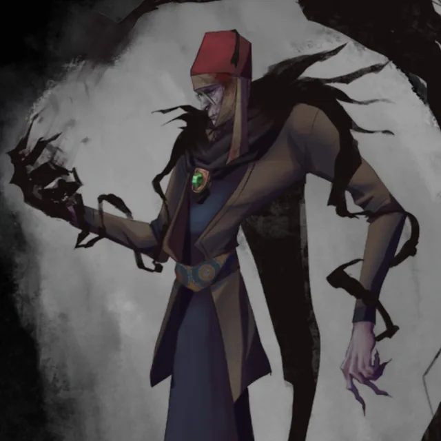

Mervyn is a seven-foot tall half-orc with unusually long arms, distinguishing him from typical orc appearances and suggesting unique heritage. He is associated with Kore, a performer in the Undercity, serving as her assistant by bringing food and drink to patrons. Mervyn is recognized for his protective and accommodating presence, ensuring guests are comfortable and not disturbed while fulfilling Kore's requests.
While at the Arraf Tavern, Mervyn assists Gizem and her companions at Kore's call, demonstrating his reliability. He serves food and drink to guests, contributing to Arraf Tavern's welcoming atmosphere and showcasing his commitment to supporting Kore and her patrons. Recently, he directed Gizem Faruki to Kore, and Kore noted that Mervyn had never been above the Undercity, highlighting his deep ties to this subterranean realm.